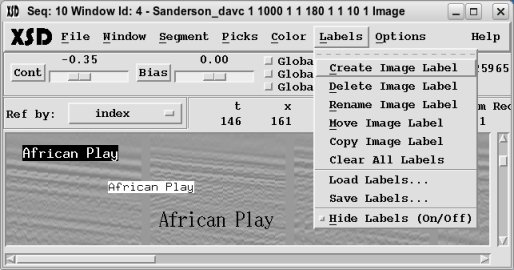
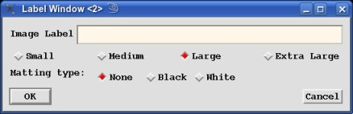
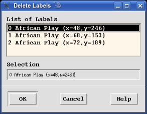
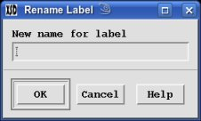

One or more Image labels can be displayed on any of the Display Window images.
The "Labels" menu button provides the functionality to manipulate these
labels. These are separate from the pick
segment labels.
- Create Image Label

This option will pop-up the Label Creation Window. You type in the
"Image Label" you want, select the text size ("Small",
"Medium", "Large" or "Extra Large"), select the
"Matting type" ("None", "Black" or "White"),
the press the "OK" button. At the point you can move your cursor
where ever you want on the image pressing any "mouse button" to place
the label.
- Delete Image Label

This option will pop-up the "Label Selection Window" where you can select an
existing label and press the "OK" button to delete it.
- Rename Image Label

This option will pop-up the "Label Selection Window" where you can select an
existing label and press the "OK" button. The "Rename Label Window"
will then pop-up allowing you to rename the selected label.
- Move Image Label
This option will pop-up the "Label Selection Window" where you can select an
existing label and press the "OK" button. At the point you can
move your cursor where ever you want on the image pressing any
"mouse button" to reposition the label.
- Copy Image Label
This option will pop-up the "Label Selection Window" where you can select an
existing label and press the "OK" button. A new label will be
created from the selected label. Move your cursor where ever you want on the
image pressing any "mouse button" to place the label.
- Clear All Labels
Select this option to clear (remove) all labels on all Display Windows.
A verification window pop-up to allow you to confirm clearing all labels or
not.
- Load Labels
This option will pop-up the "File Selection Window" where you can select a file
to load labels. This file is created by previously saving labels. The labels
will appear at the "x" & "y" pixel positions at which they were save. Thus
they will not appear if that is off the current image.
- Save Labels
This option will pop-up the "File Selection Window" where you can select a file
to save all the current labels. Only the labels from the current Display Window
will be save. The "x" & "y" pixel positions are saved along with the
label characteristics.
- Hide Labels
This toggle allows you to turn off displaying all the labels for the current
Display Window. Simply set the toggle on to redisplay all the labels.